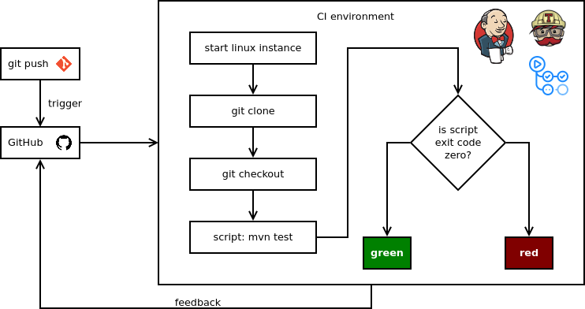

Continuous Integration

Ennek alapja a verziókövetés, a fejlesztő pusholja a módosításait a szerverre, amely lefordítja a kódot, lefuttatja a teszteket (és egyéb elemzéseket), ezek sikerességéről visszajelzést ad. Kicsit bővebben itt.
Interrupts

The Cost of Interruption for Software Developers
Az automatizálás csökkenti az interruptokat, a költségeket és azonnali visszajelzést ad!
Automation
Build scripts
Az egész CI/CD lelke egy adag script, amelyben le vannak írva az automatizált lépések. Úgy mint...
- kód fordítása (make, maven, stb.)
- bináris előállítása
- statikus kódelemzés futtatása, pl. MISRA, Checkstyle
- tesztlefedettség kiszámolását végző szoftver futtatása
- riport generálás a feedbackhez a fejlesztőnek, menedzsmentnek, megrendelőnek
- stb.
- ezek futása lehet...
- on demand: jellemzően a CI környezetekben kézzel is újra lehet futtatni egy adott job-ot
- ütemezett: adott időben ütemezetten fusson (lásd nightly buildek). Pl. egy teljes rendszer teszt, amely akár órákon át is futhat, azt célszerű lehet szó szerint éjjel futtatni, és a reggeli munkakezdésre van egy riport arról, hogy az előző napi változtatások mit törtek el (pl.)
- triggerelt: valamilyen esemény hatására fusson le. Pl. egy commit-ra, így minden pusholt commit-ra lefuthatnak a különböző szintű tesztek, statikus kódellenőrzés, stb.
Software Testing
- What is Software Testing? Introduction, Definition, Basics & Types
- Végig lehet lépkedni az egyes fejezeteken, igen jól kimeríti a témát, olyan fejezetei is vannak, amire az előadás nem tért ki.
- Több fejezetére specifikusan másutt is hivatkozok
Test Strategies

Automated Testing

Integration Testing
Remek összeföglaló a témában, amely kitér a megközelítésekre: Bottom-up, Top-down, Hybrid/Sandwich, Big Bang.
System Testing
Software-in-the-loop (SIL)

forrás: autonóm autofejlesztés tesztelése
Hardware-in-the-loop (HIL)

forrás: autonóm autofejlesztés tesztelése
Acceptance Testing
SMART Objectives

Continuous Deployment
- Six Strategies for Application Deployment
- Feature Flag Driven Development
-
This article provides a broad and comprehensive overview of feature flag driven development, from gradual rollouts to A/B testing.
-
Continuous Delivery
DevOps

Alkalmazott eszközök
A tárgyhoz használt tényleges eszközök, mondhatjuk, hogy a fentiek (egy részének) gyakorlati alkalmazása.
CI környzet
Korábban Travis CI, újabban (mióta van) GitHub Actions.
A commit(ok) pusholása esemény hatására elindul a build környezet, ez egy Ubuntu linux, amely tartalmazza a Java fejlesztői környezetet (JDK) és a fordítást menedzselő eszközt (Maven). Leklónozza a repót, kiválasztja a kérdéses branch-et, lefordítja a kódot, lefuttatja a teszteket, meghívja a statikus kódelemzőt és a tesztlefedettség elemzőt, az előállt riportokat elküldi az ezt nyilvántartó szolgáltatásoknak. Ha valamennyi teszt sikeres, akkor zöld jelzést ad. (A Jenkins időjárásikonokat használ historikusságot is figyelembe véve: sok egymást követő bukó teszt (viharfelhők) után egy sikeres még nem jelent azonnal napocskát...)

A Pull Request-ek elfogadásának feltétele a fordítható kód és a sikeres tesztek, de a statikus kódelemző és a tesztlefedettség elemző visszajelzése is megjelenik (automatizált review formájában). Ugyanilyen automatizált review-nak tekinthető az is, hogy van-e kódütközés.
Ezeken kívül a kollégák manuális review-ja is szükséges (2 approve), lásd review protokol.
Példák
Statikus kódelemzés
A statikus kódelemzést Java nyelvhez a Checkstyle végzetre, C#-hoz a StyleCop, ez lokálisan (lásd fejlesztőeszközök fejezet) is működik, a változások követéséhez és mindenféle riport generálásához (első sorban a Pull Requestekhez) a CoceFactor.io van bekötve. Ez össze van linkelve a GitHubbal repóval, a commit triggerre saját környezetben kicsekkolja az aktuális branchet, lefuttatja a Checkstyle-t (és adott esetben más elemzőket is), majd elkészíti a riportokat.
Tesztlefedettség
A Java kódunk tesztekkel való lefedettségét Java nyelvhez a JaCoCo (Java Code Coverage) nevű szoftver számolta ki, C#-hoz a Coverlet. Szintén működik lokálisan is (lásd fejlesztőeszközök fejezet), a CodeFactorhoz hasonló online riportgeneráló amit a repónkhoz beállítottam az a CodeCov. Az előbbivel analóg módon működik.
Stale bot
A stale bot funkciója, hogy a magára hagyott hibajegyeket (issue) megjelöli „megrekedt” (stale) állapottal (címkével), ha adott ideig (nálunk 1 hét) nem volt vele kapcsolatos aktivitás. Ez alól kivételt képeznek a „user story” címkéjű issue-k.
A konfigurációja a repó .github/stale.yaml fájljában található.